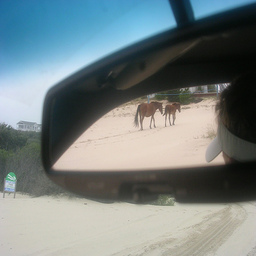
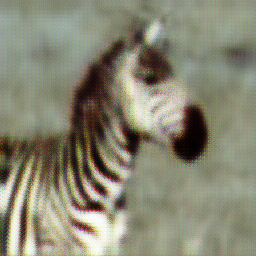

horse2zebra = untar_data('https://people.eecs.berkeley.edu/~taesung_park/CycleGAN/datasets/horse2zebra.zip')
100.01% [116875264/116867962 00:22<00:00]
If we are given a test set as a folder, we can use the get_preds_cyclegan function defined below to perform batch inference on the images in the folder and save the predictions.
I found it easier to write my own inference functionality for the custom CycleGAN model than fastai’s built-in functionality.
I define a PyTorch Dataset that can be used for inference just by passing in the folder with the image files for inference:
FolderDataset (path, transforms=None)
A PyTorch Dataset class that can be created from a folder path of images, for the sole purpose of inference. Optional transforms can be provided.
Attributes:
self.files: A list of the filenames in the folder.
self.totensor: torchvision.transforms.ToTensor transform.
self.transform: The transforms passed in as transforms to the constructor.
Let’s create a helper function for making the DataLoader:
load_dataset (test_path, bs=4, num_workers=4)
A helper function for getting a DataLoader for images in the folder test_path, with batch size bs, and number of workers num_workers
get_preds_cyclegan (learn, test_path, pred_path, convert_to='B', bs=4, num_workers=4, device='cuda', suffix='tif')
A prediction function that takes the Learner object learn with the trained model, the test_path folder with the images to perform batch inference on, and the output folder pred_path where the predictions will be saved. The function will convert images to the domain specified by convert_to (default is ‘B’). The other arguments are the batch size bs (default=4), num_workers (default=4), the device to run inference on (default=‘cuda’) and suffix of the prediction images suffix (default=‘tif’).
horse2zebra = untar_data('https://people.eecs.berkeley.edu/~taesung_park/CycleGAN/datasets/horse2zebra.zip')folders = horse2zebra.ls().sorted()trainA_path = folders[2]
trainB_path = folders[3]
testA_path = folders[0]
testB_path = folders[1]dls = get_dls(trainA_path, trainB_path,load_size=286)
cycle_gan = CycleGAN(3,3,64)
learn = cycle_learner(dls, cycle_gan)
learn.model_dir = '.'
learn = learn.load('models/model')/usr/local/lib/python3.8/dist-packages/fastai/learner.py:56: UserWarning: Saved filed doesn't contain an optimizer state.
elif with_opt: warn("Saved filed doesn't contain an optimizer state.")preds_path = './h2z-preds'
get_preds_cyclegan(learn,str(testA_path),preds_path,bs=1,device='cpu')preds_path = './h2z-preds'
get_preds_cyclegan(learn,str(testA_path),preds_path)Image.open(testA_path.ls()[100])
Image.open(os.path.join(preds_path,testA_path.ls()[100].parts[-1][:-4]+'_fakeB.tif'))
preds_path = './z2h-preds'
get_preds_cyclegan(learn,str(testB_path),preds_path,convert_to='A')Image.open(testB_path.ls()[100])Image.open(os.path.join(preds_path,testB_path.ls()[100].parts[-1][:-4]+'_fakeA.tif'))
The trained generator can be exported as a PyTorch model file (.pth) with the following function:
export_generator (learn, generator_name='generator', path=Path('.'), convert_to='B')
if os.path.exists('generator.pth'): os.remove('generator.pth')
export_generator(learn)
assert os.path.exists('generator.pth')